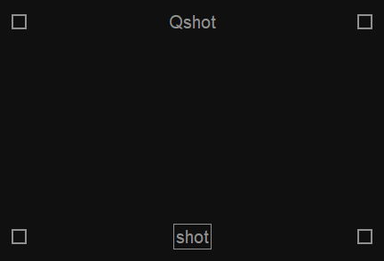
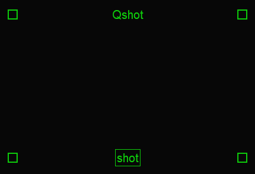
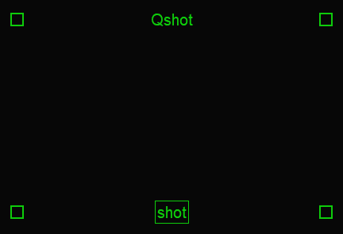
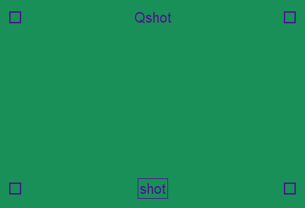
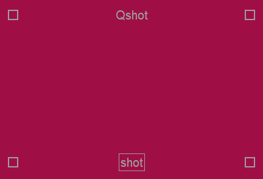
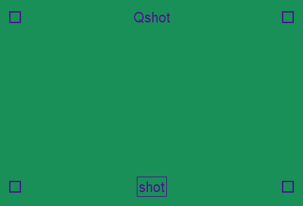
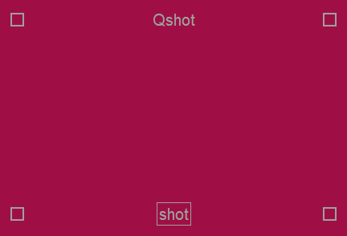

Quickshot
A simple, portable, customizable screenshot tool. It is an open-source application you can check the Quickshot github page.


Download
Windows
QuickshotSetup.exe | win32 installer (recommended)
Quickshot.msix | msix installer
Quickshot.zip | portable
Linux
Quickshot.AppImage | check linux support
Check versions for more detail about versions.
Custom color Quickshot examples
 

 



Quickshot has several customization options.
- Background, accent color and opacity customization.
- Hotkey customization.
- Multi screen support for full screen screenshots.
- Clipboard support.
- Screenshot save customizations
- Save name and path.
- Options for screenshot numbering.
- Date formatting.
- Locale date naming.
- jpg and png support.


Versions
Windows
- win32 installer
- This version has an option for adding shortcut to context menu, if selected you can not move the installation folder.
- msix installer
- msix packages needs to use another folder for saving settings since they can not be changed, this version saves settings to C:\Users\USER\.Quickshot.
- portable
- Portable version without installer.
Linux
- AppImages needs to use another folder for saving settings since they can not be changed, this version saves settings to /HOME/USER/.Quickshot.
- Extra dependencies
- Clipboard function requires xclip to be installed on Linux.
- Known issues
- Scaling display causes coordinate problems on screenshots on kde plasma but works on gnome ü§∑ü誂Äç‚ôÇÔ∏è.
- Some long animations causes Quickshot's frame to be visible on screenshots, use Window invisibility time option for delaying screenshot (or disable display compositor).